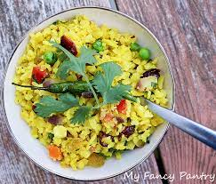

CHANA MASALA

EGG CURRY

Create delicious recipes with ease using our interactive web application.
Simply input the dishes you intend
to cook,
along with their corresponding ingredients and step-by-step procedures,
to ensure a seamless and
delightful cooking experience.